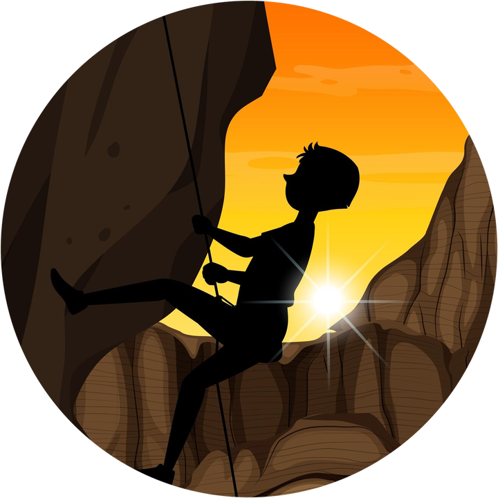
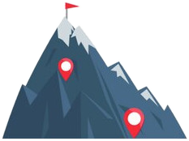
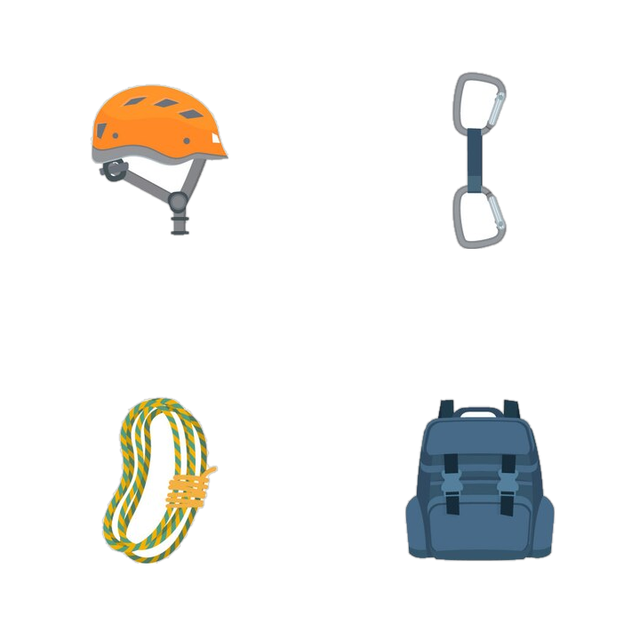

Crag Atlas



~110
crags
Crag Atlas brings together the crags and routes of falesiaonline.it, the free public catalogue, in one app made for the crag.
Browse the crags, open one to see its routes, sun and approach, and find it on the map. Open navigation takes you to the parking.
Everything is saved on your phone, so the app works at the crag with no coverage. When you're online, the data refreshes by itself about once a week.
To work offline, the app downloads every crag and its routes once. Depending on your connection this can take a while: you can leave the app, the download goes on in the background. After that, it opens instantly.